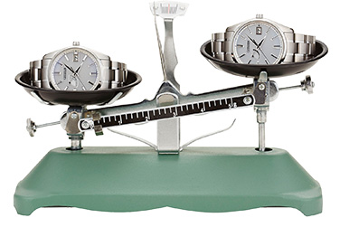
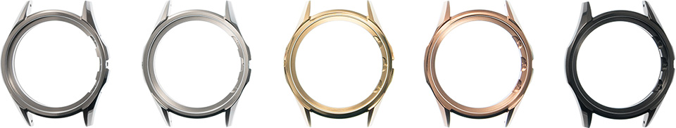
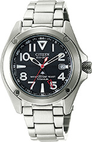
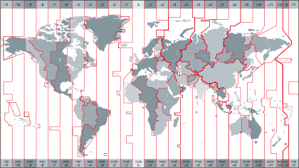
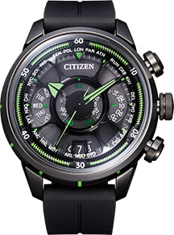

Eco-Drive
Eco-Drive
The watch that never stops, wherever you are.
Inventing technology to ensure that a watch never stops anywhere in the world
was one of the challenges for CITIZEN.
In 1976, we invented the world's first light-powered analogue quartz watch
that uses only light as a power source.
This technology, now known as “Eco-Drive,” can generate power
from any light source, artificial, natural and even dim light
to keep watches running without ever replacing batteries.
As a pioneer of the field, we set new challenges for ourselves to bring forth
the full potential of power generation using light.

CITIZEN's Eco-Drive technology has won acclaim in Japan for its contribution to environmental protection. In 1996, an Eco-Drive watch was nominated as the first watch to qualify for the Eco Mark, a label managed by the Japan Environment Association (JEA). In 2014, CITIZEN became the first watchmaker to receive a Gold Prize in the JEA's Eco Mark Awards.

Features of Eco-Drive
Watches Powered by Light
Eco-Drive is designed to convert both natural and artificial light into energy to power watches. Watches with Eco-Drive do not require any battery replacement, charging or winding to maintain constant operation.

Easy to Charge Even in Dim Light
Eco-Drive is designed so that any light source, no matter how dim, will generate the energy needed to power the watch.
Light itself is the only energy source required to tell the time with an Eco-Drive watch.
Darkness Is Not a Concern
One of the factors that distinguishes CITIZEN's Eco-Drive from other methods of keeping watches running at all times is its “power life.”
Most Eco-Drive watches continue running for more than six months on a full charge, even in total darkness.
Thanks to our power saving function, we make watches that can operate for up to even seven years without light.
Technologies
Light-Powered Generation
Eco-Drive efficiently converts any light, including artificial, natural and even dim light, into energy. CITIZEN has focused its development efforts on two different types of solar cells.
Standard Solar
This is the most commonly used solar cell in our watches today. It converts light into energy with high efficiency because it sits under the dial.
Ring Solar
This ring-shaped solar cell wraps around the dial and also converts light into energy efficiently. It allows more design flexibility on the dial, as the dial surface does not need to be transparent to allow light to pass through.
Saving Energy
CITIZEN has dedicated itself to improving its technologies to develop power efficient watch movements. Our pursuit of innovation has allowed us to bring to the market many light-powered watches with advanced functions and designs.
Insufficient Charge Warning
When an Eco-Drive watch with this feature has an insufficient charge, the second hand jumps in 2-second intervals. Once the battery is fully charged, the second hand returns to normal operation.
Power-Save Feature
When an Eco-Drive watch with this feature is left in the dark, the hands stop in order to save energy. Once light hits the watch, the hands move quickly and automatically to catch up to display the current correct time.
Light-Level Indicator
CITIZEN invented the world's first,∗ Light-Level Indicator for analogue watches. It detects the intensity of light striking the dial and displays the electricity generation level at the moment, allowing wearers to easily gauge the charge level in any given situation.
∗
According to research by CITIZEN WATCH CO., LTD.
Story
Energy for the Future
The Energy Crisis of the mid-1970s was one of the triggers that started CITIZEN on the quest for viable alternative energy sources. The social backdrop of the time led us to develop a “light-powered watch" that could run on the power of sunlight.
By the 1970s, battery-powered quartz watches had established the dominant market position in the Japanese watch market and became the most popular watches available. At the same time, we were facing several potential issues with quartz watches, such as a limited battery life, which would require periodic battery replacement, and the environmental impact of disposable batteries.
First Light-Powered Analogue Watch
Early solar cells were too bulky and easy to break for wristwatches. However, reducing their size was thought impossible by CITIZEN's R&D department.
In 1974, we completed its first prototype of a light-powered analog watch with a round solar cell embedded in the dial. Two years later, in 1976, the Crystron Solar Cell, the world's first light-powered analog watch, was launched.
-

1974
-

1976
The Watch that Never Stops
When the Crystron Solar Cell was brought into the market, solar cells and secondary batteries to store the surplus energy they generated were limited in terms of generation capacity. The product life was shorter than that of battery-powered watches, which continue ticking away regardless of the time of day.
The increasing demands for secondary batteries and the growth of light-powered products among many industries during the 1980s drove CITIZEN's engineers to advance our technologies and pursue further improvements in light-powered watches.
After strenuous development efforts, we introduced the world's first industrial watch that could run up to 200 hours on a full battery charge.
The development of thinner solar cells that could utilise room lighting, as well as sunlight, and more resilient electric double-layer capacitors inspired our engineers to continue improving light-powered watches.
Then, in 1995, we added a secondary lithium-ion cell for power storage, resulting in a light-powered analogue watch that runs for six months or more on a full charge.
-

1986
Eco-Drive
CITIZEN's proprietary light-powered technology, now named as “Eco-Drive”, not only to represent our exceptional technological achievements, but also reflects our concern for the natural environment. Most importantly, the name and the logo mark show our dedication to be a brand for people all over the world.
Never-Ending Challenge
CITIZEN's brand statement—Better Starts Now—was behind the many "world's first" products. It continues today with our pursuit to develop even more exquisite light-powered watches designed with diverse functions and materials all with the goal of improving the pleasure of wearing a watch.
-

1998
The world's first
light-powered
divers watch -
2010
The world's thinnest∗
light-powered
watch
∗4.9mm thick
at the time of release in 2010
-

2011
The world's smallest∗
light-powered
radio-controlled
watch
∗24.5mm radius
at the time of release in 2010 -

2012
Light-powered
watch,
which takes in light
from the side of its case
-
2013
The world's first
Bluetooth light-powered
watch
Note : There are models which are no longer in production or not available in some markets.

Super TitaniumTM

Special Movie
Super TitaniumTM
A Material Designed for Scratch Resistance and Comfort Wearing
CITIZEN has always striven to innovate. When it comes to the materials we use,
we take the same approach.
In 1970, we launched the world's first watch using solid titanium that is lightweight,
hypoallergenic and resistant to rust.
We processed solid titanium and then treated it with our proprietary
surface hardening technology, Duratect, to create Super TitaniumTM.
Achieving more than 5 times the hardness of stainless steel and
providing better wearing comfort,
Super TitaniumTM represents our commitment to providing people
with something better.
Features of Super TitaniumTM
Harder Materials, Fewer Scratches
Keeping your watch scratch free and undamaged doesn't mean you have to hide it away in your dresser. Super TitaniumTM provides the ideal solution to the "beauty vs. preservation" dilemma.
Thanks to CITIZEN's proprietary surface hardening technology, Duratect, watches made of Super TitaniumTM are incredibly resistant to everyday wear and tear.
Super TitaniumTM is more than
5 times harder than stainless steel
-

Stainless Steel
-

Super TitaniumTM(Duratect TIC)
Scratch comparison test by CITIZEN WATCH CO., LTD.
Light, for Better Comfort
Super TitaniumTM is approximately 40% lighter than stainless steel.
It’s so light that you almost forget you’ve got a watch on at all.
And it feels good on your wrist, whatever you’re doing.
Super TitaniumTM is approximately 40% lighter
than stainless steel
-
Stainless Steel
-
Super TitaniumTM

Note: Comparison of watch models with the same design,
one made of stainless steel and the other of Super TitaniumTM.
A Gentle Metal That’s Kinder on Your Skin.
Super TitaniumTM reduces the risk of adverse skin reaction to metals thanks to the use of hypoallergenic solid titanium and CITIZEN's proprietary surface hardening technology. And that’s true even for people with unusually sensitive skin.
Note:
Super TitaniumTM does not prevent all allergic reactions to metal.
More Resistant to Corrosion, for Lasting Beauty
Super TitaniumTM is more resistant to corrosion even when it comes to contact with salt water.
Wherever you are and whatever you do, you can rely on Super TitaniumTM to ensure your watch looks its best.
∗
The pins used for the band may tarnish. CITIZEN recommends regular cleaning.

Technologies
Technologies
Titanium is the fourth most abundant structural metal on Earth. An incredible material that does not react to sunlight, salt water, or human body chemistry, it reduces the possibility of metal allergic reaction and is corrosion resistant.
Pressing
Titanium is an active metal that reacts easily with oxygen, carbon, nitrogen, and other elements. Titanium atoms have a tendency to adhere to, and fuse with the metal molds used in pressing. To prevent the titanium sticking to the mold and to make it easier to shape, CITIZEN altered its qualities by heating it to a high temperature before pressing. This innovation considerably reduced its resistance to shaping—and opened up numerous possibilities.

Machining
Titanium is quick to react to the oxygen in the air. As a result, when titanium is drilled, metal filings tend to stick to the sides of the drill, causing friction, reducing the thickness of the drill and making it difficult to stabilise the bore diameter. CITIZEN experimented with numerous cooling oils, lubricants and machining speeds to refine traditional titanium-machining techniques and achieve stable and predictable results.

Polishing
Polishing is yet another hurdle when using titanium for watchmaking. Owing to slight variations in the hardness of the crystal grains that form titanium, the conventional polishing process creates surface irregularities likely to mar the sheen of a watch. At CITIZEN we combine a number of polishing techniques, including barrel and Sallaz polishing, to achieve superior surface quality for our watches made of Super TitaniumTM.
Surface Hardening Technology: Duratect
CITIZEN's proprietary technology, Duratect, was developed to harden the surface of watch materials.

Machinery for Duratect treatment
CITIZEN has various ways of surface harfening materials.
It provies a range to surface hardness (up to more than five times the surface hardness of stainless steel) while at the same time, colouring the watches in silver, black, and gold, which were once thought impossible.
The Vickers hardness test involves measuring the hardness value of the surface of a material by forcing a diamond indenter into it.
It is very widely used, including as a basis for other hardness tests.
Note that the test only measures the hardness value of the surface coating with a low load. The Vickers hardness test is not designed as a measurement to indicate scratch resistance in an everyday context.
Colour Variations of Watch Cases Made of Super TitaniumTM

Duratect Surface Hardening Technologies
IP
This technology, which includes ionizing and coating the metal surface, makes possible diverse color variations, such as silver and pink gold.
Duratect TIC (HV1,000-1,200)
IP technology is used to harden the surface by coating it with a hard membrane for mirror and hairline finishes.

Duratect PTIC (Hv1,000-1,200)
Duratect TIC is further coated with platinum, a noble metal. Thickness can be controlled in this way without sacrificing hardness to achieve the exquisite color of platinum and color tones comparable to stainless steel.
Duratect GOLD (Hv1,300-1,500)
CITIZEN's original IP technology is used to coat titanium nitride film with gold and an alloy compound. The result is a beautiful gold hue unattainable with previous technologies.

Low-Temperature Plasma
This technology involves the plasmafication of gases containing raw materials for coating on the metal surface. Duratect DLC has a diamond-like amorphous structure for a very hard and smooth coating that gives a distinctively luxurious dark gray hue to treated surfaces.
Duratect DLC (Hv1,000-1,400)
DLC (Diamond Like Carbon) is a coating technology using a hard amorphous carbon film made up mainly of carbon and hydrogen. The result is a bold dark gray color.

Sputtering
Argon ions are bombarded onto the target metal with this technology. The atoms deposited are then used to coat metallic surfaces. In addition to achieving about twice the surface hardening of conventional technologies, this technique results in excellent hypoallergenic properties.
Duratect α (Hv2,000-2,500)
This is CITIZEN's ultimate new surface hardening technology, offering twice the hardness of Duratect TIC/PTIC. Coating materials that contain no noble metals results in high scratch resistance and gentleness on the wearer’s skin.
Gas Curing
Nitrogen and oxygen injected into a vacuum furnace are processed using heat to form a hard layer 20 μm to 30 μm thick.This technology can be used to produce surfaces resistant to scratching even under harsh usage conditions.
Duratect MRK (Hv1,300-1,500)
The titanium surface is hardened by coating it with a material infiltrated by nitrogen and oxygen for a mirror finish that is highly resistant to scratches.
Composite Curing
This technology represents a combination of gas curing technology with low-temperature plasma or sputtering technology. Overlapping the hardened layer with a hard coating further improves overall material hardness and hypoallergenic properties.

Duratect MRK/DLC (Hv1,000-1,400)
Duratect DLC hard amorphous carbon film is applied to Duratect MRK surfaces made with gas curing.

Duratect MRK/α (Hv2,200-2,500)
Titanium materials with Duratect MRK surfaces are coated with Duratect α, the ultimate surface hardening technology in CITIZEN's Duratect lineup.
Story
Exploring Ideal Materials for Watches
The origins of Super TitaniumTM stretch back to the 1960s, when the Apollo moon mission first revealed titanium’s potential as an industrial material. Inspired by this glimpse of the future, CITIZEN engineers set about exploring how they could apply titanium to watch manufacturing
The First Titanium Watch
In 1970, we produced the X-8 Chronometer, the world’s first watch with a solid titanium case. The name expressed our high hopes for titanium and its infinite possibilities as a material.
-

1970
Titanium Watches for Everyone
CITIZEN was impressed with titanium's hypoallergenic properties. In fact, we made it our mission to create innovative watches that were safe and gentle on the skin, so that everyone could enjoy wearing a watch.
The Attesa, introduced in 1987, was an all-titanium hypoallergenic watch created in-house.
-

1987
Super TitaniumTM, a CITIZEN original
CITIZEN wanted to explore titanium’s infinite possibilities as a material for watchmaking. It was never going to be easy. But we met the challenge by creating our own titanium-processing technology, and following that up with our proprietary surface hardening technology, Duratect. The challenge goes on in line with the spirit of "Better Starts Now", as we look forward to making future breakthroughs.
Improvements in our titanium-processing technology have enabled our designers to create a wide range of great designs. Thanks to advances in our surface-hardening technology, we have also succeeded in creating models with higher resistance to scratches in a wide range of colours and with stronger hypoallergenic properties.
We are on a never-ending journey to provide everyone, everywhere, with the chance to wear a beautifully designed and comfortable watch. This was the dream that first led the team at CITIZEN to develop Super TitaniumTM—and it still drives us today, as we address the challenges that come up en route to creating ever better timepieces.
-

1982
Titanium diver watch
with the world's
highest∗ water
pressure resistance
to the depth of
1,300 meter
∗At the time of release in 1982 -

1993
All-titanium metal
allergy resistant watch
-

1994
Platinum-plated
titanium watch -

2000
The first
titanium watch
treated with
Duratect
-
2006
The first
titanium watch
treated with
Duratect
MRK+DLC
Note : There are models which are no longer in production or not available in some markets.
Satellite Wave & Radio-Controlled
Satellite Wave
The Precise Time for People Everywhere
Since its very beginnings, watchmakers have continually strived for
the most accurate time keeping possible.
In 2011, CITIZEN first invented a unique satellite timekeeping technology,
“Satellite Wave”, which enables watches to receive time signals from
GPS satellites and display precise time and date anywhere in the world.
Combined with our Eco-Drive technology,
our watches with Satellite Wave technology never require battery changes
nor time setting by rotating crown.
Features of Satellite Wave
Precise Timekeeping Anywhere in the World
With coverage across all 40∗ of the existing UTC standard time zones∗, watches with Satellite Wave will ensure the most accurate time you will find in any conventional watch. Whether you trek through the desert, cruise the oceans or climb a snowy mountain, you never need to worry about having the right time.
∗Coverage of timezones differs by models
Coverage in 40 time zones

∗This is a simplified time zone map. Actual time zones may differ.
Synchronised to the time of where you are now
Imagine that you are driving across a continent, with the time changing whenever you leave one time zone and enter another. Wherever you go, Satellite Wave links to GPS satellites to acquire position data and a time signal. It uses these to automatically figure out which time zone you are in and synchronise your watch to the correct time for wherever you are at that moment.
∗
Some models receive time signals only.
∗
Getting position data requires a minimum of 30 seconds. Switching to daylight saving time must be done by hand.
The World's Fastest∗ Satellite Time Reception at 3 Seconds
Satellite Wave technology allows your watch to adjust to a new time zone with amazing speed and ease. Receiving a time signal in as quickly as three seconds, Satellite Wave has the world's fastest signal reception speed from GPS satellites.
∗
As of May 2015, for a light-powered GPS satellite-synchronised watch, according to research by CITIZEN WATCH CO., LTD.
Technologies
Satellite Timekeeping System
CITIZEN's Satellite Timekeeping System allows watches to set the correct time and date by receiving position data and time signals from GPS satellites orbiting 20,000 kilometers above the earth.

［Unique Algorithm］
CITIZEN not only cares about accurate timekeeping , but also about watch usability. We have developed unique algorithms to make Satellite Wave the fastest*in the world when receiving data from GPS satellites, doing so in as little as three seconds. Our Satellite Timekeeping System takes only half the time to adjust compared with models we introduced in 2011 - a testimony of continuous and tireless work to improve our products.
∗
As of May 2015, as a light-powered GPS satellite-synchronised watch, according to research by CITIZEN WATCH CO., LTD.
［High-Speed Watch Hands］
Our watches contain the latest in high-speed motors for watch hands.
Our efforts in this area of technology make the transition to the correct time stunningly beautiful and fast.
Story
Telling You the Precise Time, Everywhere
CITIZEN's goal of providing people with the correct time, regardless of where in the world they live and work, led to the development of Satellite Wave technology. When we started, there were no GPS chips designed specifically for watches to display the correct time. Undaunted, we set about establishing our own technologies to successfully open the door to the future of watches.
The World's First Watch Powered by Light and Capable of Setting the Time by GPS Satellites
The Eco-Drive SATELLITE WAVE, the world's first light-powered satellite-synchronised watch released in 2011, was the culmination of arduous efforts by CITIZEN's engineers. It's stylish futuristic case and dial design exemplified the fusion of the earth and outer space.
-

2011
The quest for speed
For CITIZEN, genuine convenience means our customers being able to acquire and display the time information for whatever country or region they are in as fast as possible. Driven by a great deal of research, the Eco-Drive SATELLITE WAVE model (2011) was able to acquire a time signal in a minimum time of six seconds. The Eco-Drive SATELLITE WAVE F100, introduced in 2014, achieved the world’s fastest satellite reception speed*—as little as three seconds. By providing each of the three hands—the hour hand, minute hand and second hand—with its own independent motor, adjusting the time became totally stress-free. The Eco-Drive SATELLITE WAVE F100 was also the thinnest satellite-synchronised watch in the world*.
∗
As of May 2015, according to research by CITIZEN WATCH CO., LTD.
-

2014
GPS functionality on an upward curve
In 2015 CITIZEN developed a model that could capture not just time signals, but position data too. This was the Eco-Drive SATELLITE WAVE F900, multifunctional light-powered GPS satellite-synchronised watch first announced at BASELWORLD 2015. It pushes the concepts of speed and thin design even further to get the maximum out of GPS functionality. Featuring a motor that can drive the hands both clockwise and counter-clockwise extremely fast, it provides the precise time for wherever you are at high speed. It is also the world’s thinnest GPS satellite-synchronised watch.*
CITIZEN is always striving for faster and more precise timekeeping. Our quest never ends.
∗
As of May 2015, according to research by CITIZEN WATCH CO., LTD.
-

2015
Note : There are models which are no longer in production or not available in some markets.
Radio-Controlled Technology
Constant and Precise Timekeeping for the Superior Accuracy.
CITIZEN launched the world's first multi-band radio-controlled watch in 1993,
and remains a pioneer in this field.
Combined with our proprietary light-powered Eco-Drive technology,
you will get precise time powered by any light source.
Features of Radio-Controlled
Accurate to 1 Second Over 100,000 Years
With a margin of error of just one second in 100,000 years, CITIZEN's radio-controlled watches receive radio signals from an atomic clock to set the time correctly.
Automatic and Convenient
To avoid interference with smartphones and other electronics used during daytime, CITIZEN's radio-controlled watches receive radio signals late at night to adjust your watch to the correct time and day.
Technologies
Signal Reception
A signal containing the precise time, day and date, measured by an atomic clock accurate to one second every 100,000 years, is sent directly to the watch using standard radio waves.
Four Major Regions of Reception
The current geographical areas covered by this service are Japan, China, North America and Europe.
Notes:
1.
Available zones indicated on the maps are based on rough calculations and do not represent exact geographical availability.
2.
Reception ranges differ depending on each watch’s function.
3.
Buildings and other obstructions, as well as adverse weather conditions can effect signal reception.
Story
For the Most Accurate Time
In 1989, in the never-ending quest of every maker of timepieces to ensure ultra precision, CITIZEN began development of its radio-controlled technology. We were the first Japanese watchmaker to take up this challenge, so we had to overcome numerous obstacles, from creating the equipment needed to develop the technology, to coming up with measuring instruments to evaluate reception performance using antennas placed on window sills in the lab. These efforts allowed us to achieve Japan's first standard radio signal reception IC.
World's First Multi-Band Radio-Controlled Watch
Overcoming many technological hurdles, in 1993 CITIZEN debuted the world's first "multi-band radio-controlled watch." The antenna, the heart of signal reception sensitivity, would be prone to interference from metal watch cases and parts, which is why we prominently placed it in the center of the dial. The result was a highly distinctive design that boldly highlighted our new technology to ensure accuracy.
-
1993
Putting Both Design and Function First
In the following years, CITIZEN's advances would lead to watches that no longer needed to show off radio wave functionality on the outside of the watch. We worked first with resin and then ceramic cases which were a better conduit for the signal reception with the hopes of one day being able to use full metal cases.
With better antenna and receiver circuits, we realized the once “impossible” full (including the back lid) metal case in 2003. This model became very popular, pushing recognition of the radio wave category.
-

2003
Reducing the Profile While Enhancing Performance
Radio-controlled watches have evolved into a core product line at CITIZEN since we offered the first model with a full metal case in 2003. We have continued our work on related technologies to realise a wide lineup of beautiful watches that keep getting smaller and thinner. Part of this work has been on making the antennas smaller without sacrificing performance. We have come a long way, but the possibilities continue to open before us.

Note : There are models which are no longer in production or not available in some markets.